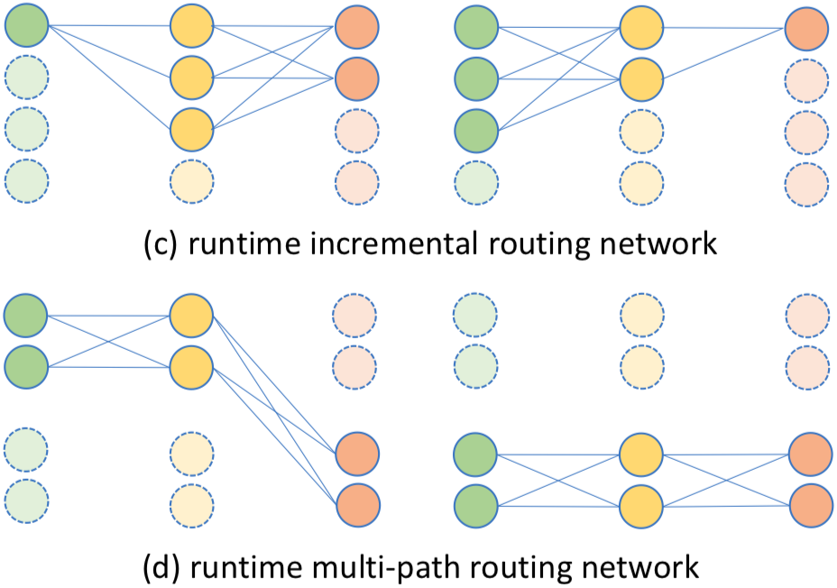

Ji Lin

Contact:
jilin AT mit.edu
About Me
I am currently a first-year Ph.D. student at MIT EECS. Previously, I graduated from Department of Electronic Engineering, Tsinghua University.
My research interests lie in efficient and hardware-friendly machine learning and its applications.
Education
Selected Publications
* indicates equal contribution
|
TSM: Temporal Shift Module for Efficient Video Understanding
|
{kind=link}

|
HAQ: Hardware-Aware Automated Quantization
Oral Presentation
|

|
Defensive Quantization: When Efficiency Meets Robustness
|

|
AMC: AutoML for Model Compression and Acceleration on Mobile Devices
|

|
Adaptive Mixture of Low-Rank Factorizations for Compact Neural Modeling
|
|  |
Runtime Network Routing for Efficient Image Classification
|
{kind=link}

|
Runtime Neural Pruning
|
|
Learning Discriminative Aggregation Network for Video-based Face Recognition
Spotlight Presentation
|
{kind=link}
|
Consistent-aware Deep Learning for Person Re-identification in a Camera Network
Spotlight Presentation
|
{kind=link}
Academic Service
- Invited reviewer for ICML, NeurIPS, ICCV, IJCAI, AAAI, ACMMM
Honors and Awards
Honors
- Outstanding Thesis Award, Outstanding Graduate, Tsinghua University • 2019
- China National Scholarship, Ministry of Education of P.R. China • 2017
- Cai Xiong Scholarship (10/3300), Tsinghua University • 2018
- Spark Scientific and Technological Innovation Program (50/3300), Tsinghua University • 2017-2018
Challenges
- 1st Prize of Visual Wakeup Words (VWW) Challenge • 2019
- 3rd Prize of IEEE 2019 Low Power Image Recognition Challenge (LPIRC’19) • 2019
- 3rd Prize of IEEE 2016 Low Power Image Recognition Challenge (LPIRC’16) • 2016